Värvid ja tüpograafia
Tüpograafia ja kirjakunst on graafilisesdisainis kui ka UI disaineri töös
olulise tähtsusega. Tutvusin erinevate fontide ja kirjastiilidega ning nende
kasutamispõhimõtedega nii füüsilisel objektil kui ka veebipõhisel lõuendil.
Tüpograafia osas on mitmeid erinevaid reegeid, mida eelkõige UI disainer ja
graafilinedisainer peab silmaspidama. Reeglid, mis kehtivad veebikeskonnas, peavad
silmaspidama kasutajamugavust, erinevaid seadmeid, kust kasutajad kirja tarbivad ning
teemaks tulevad kindlasti ka juurdepääsetavuse nõuded, kus fontidele ja suurustele on
reeglid määrava tähtsusega. UI disaineri vaates on ka värvid ja nende valik oluline ja
vajalik teave erinevate tööülesannete kujundamisel. Selles teemaplokis tutvusin kuidas
värvsepkter on ülesehitatud ning mida täpselt tähendavad erinevad värvikoodid. Mis värve
kasutada trükis ja mis sobib veebis. Põnev teema oli ka trükiste küljendamine, mis tõsi küll
ajanappuse tõttu üsna lühikeseks lõiguks aineploiks jäi.
 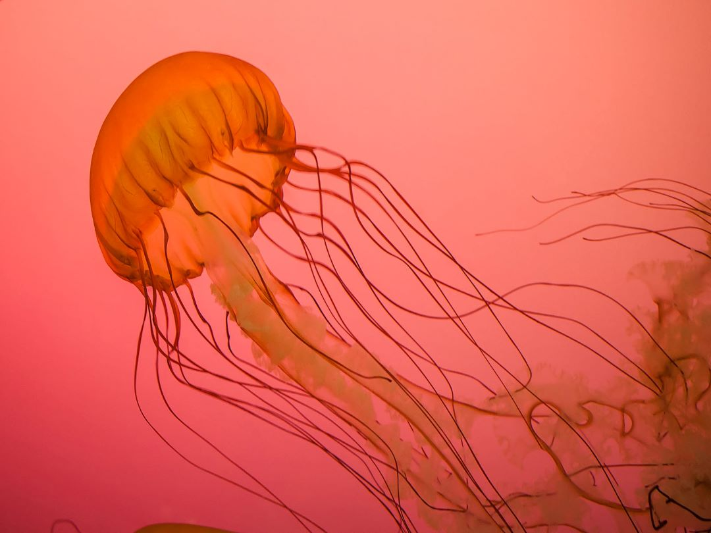
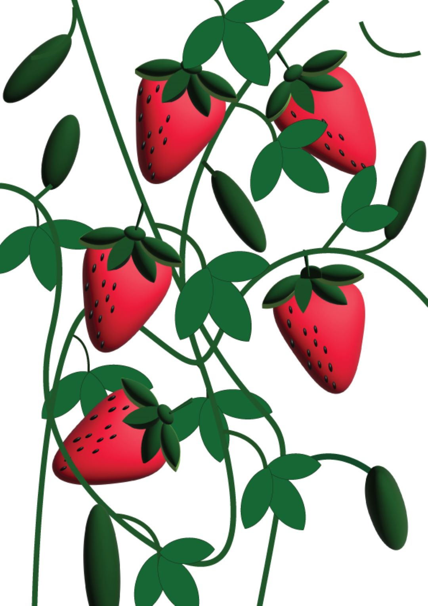
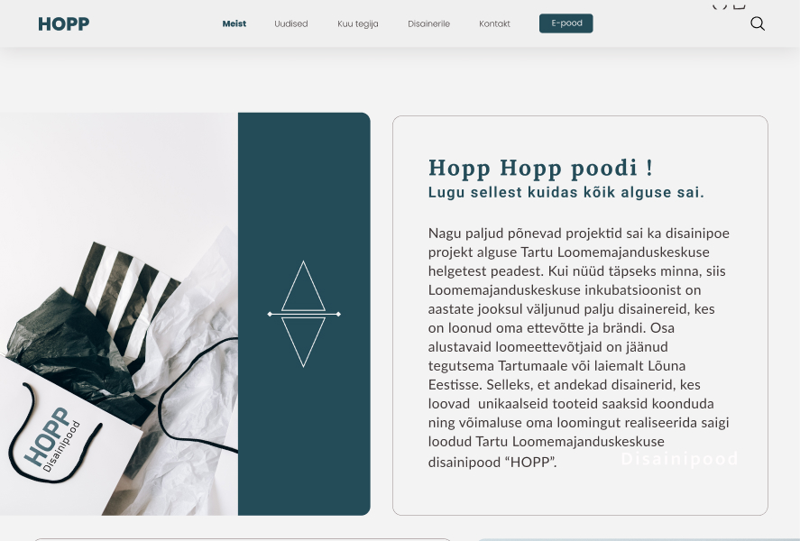
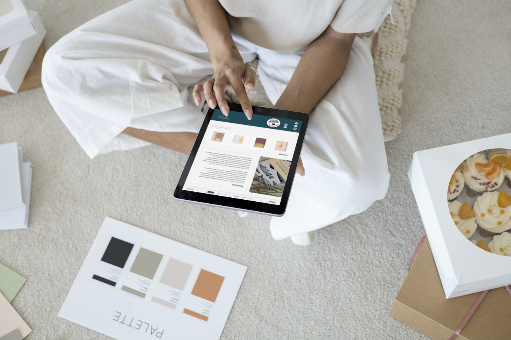
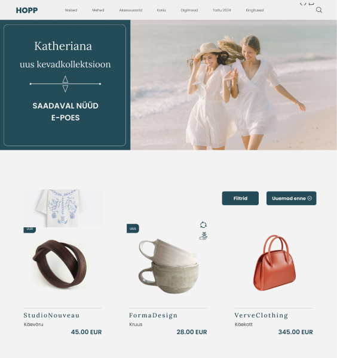
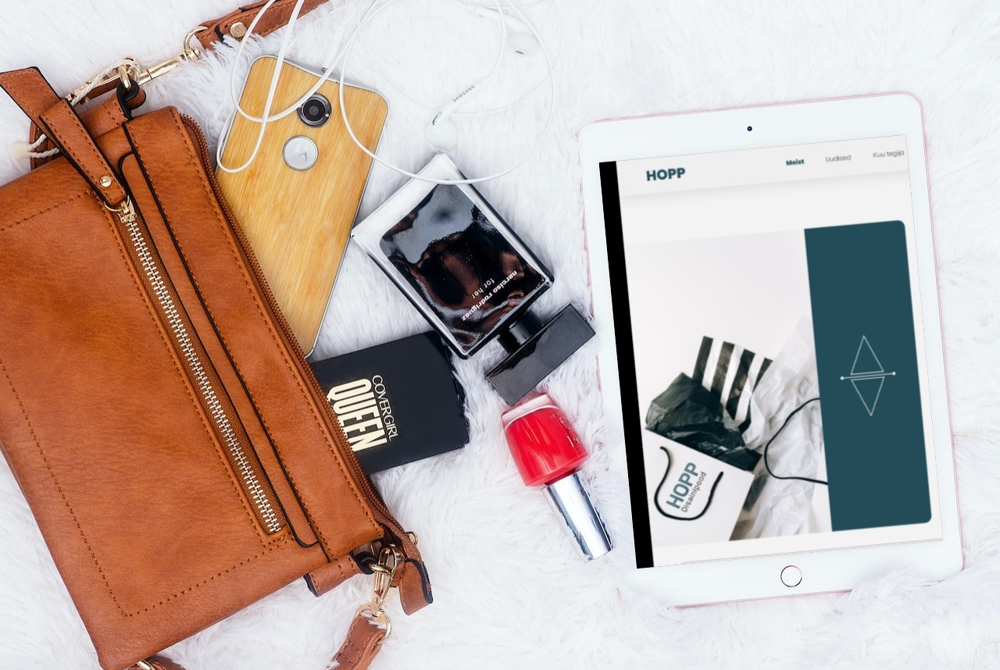
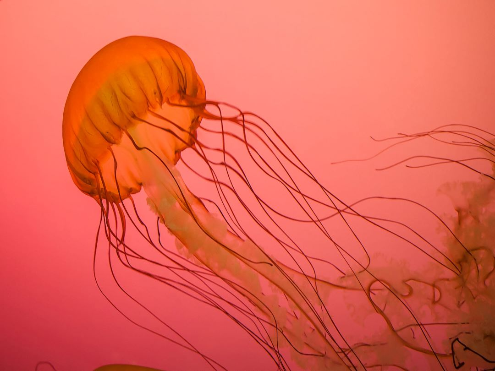
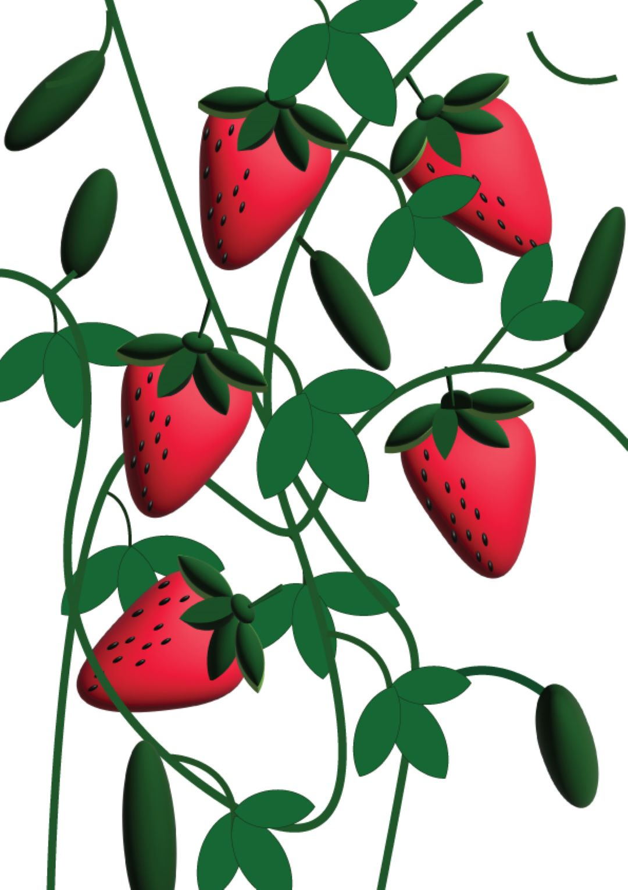
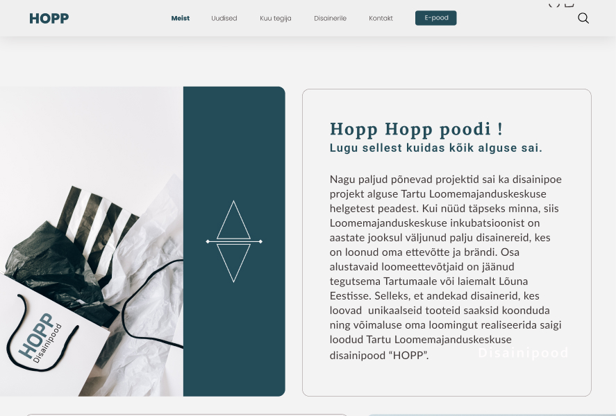
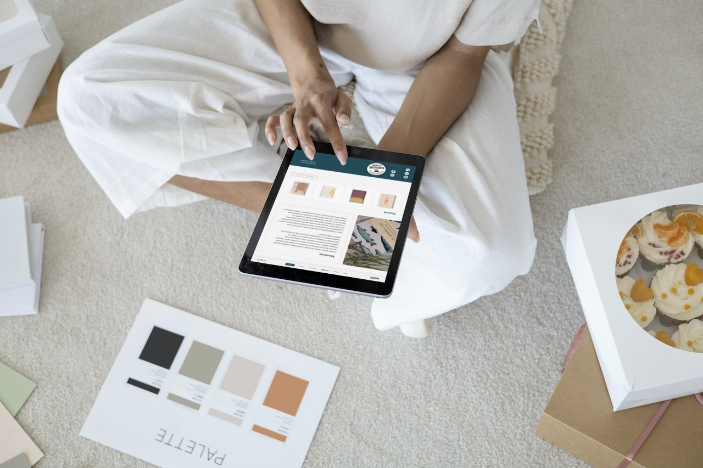
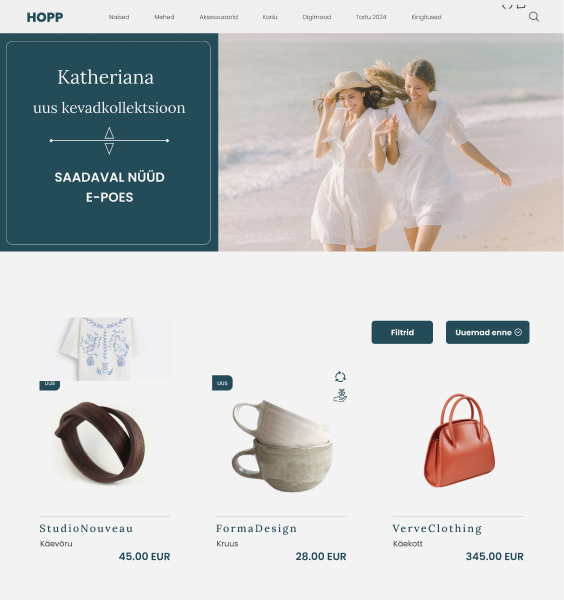
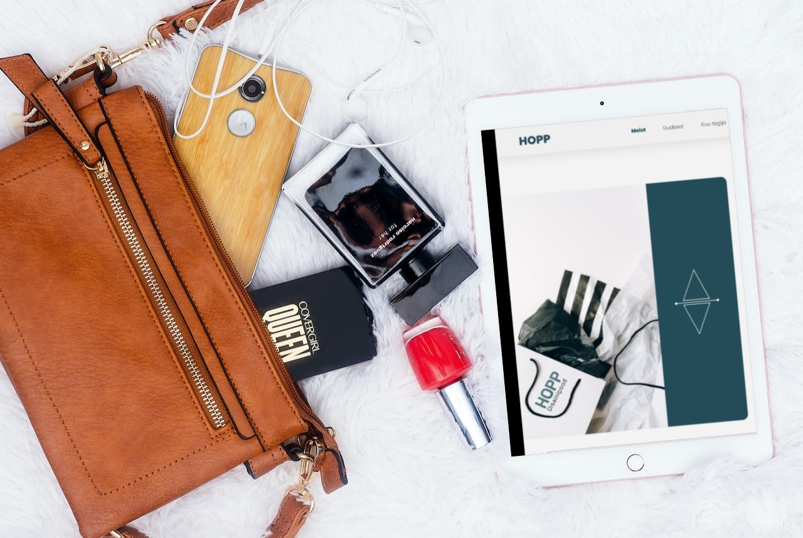